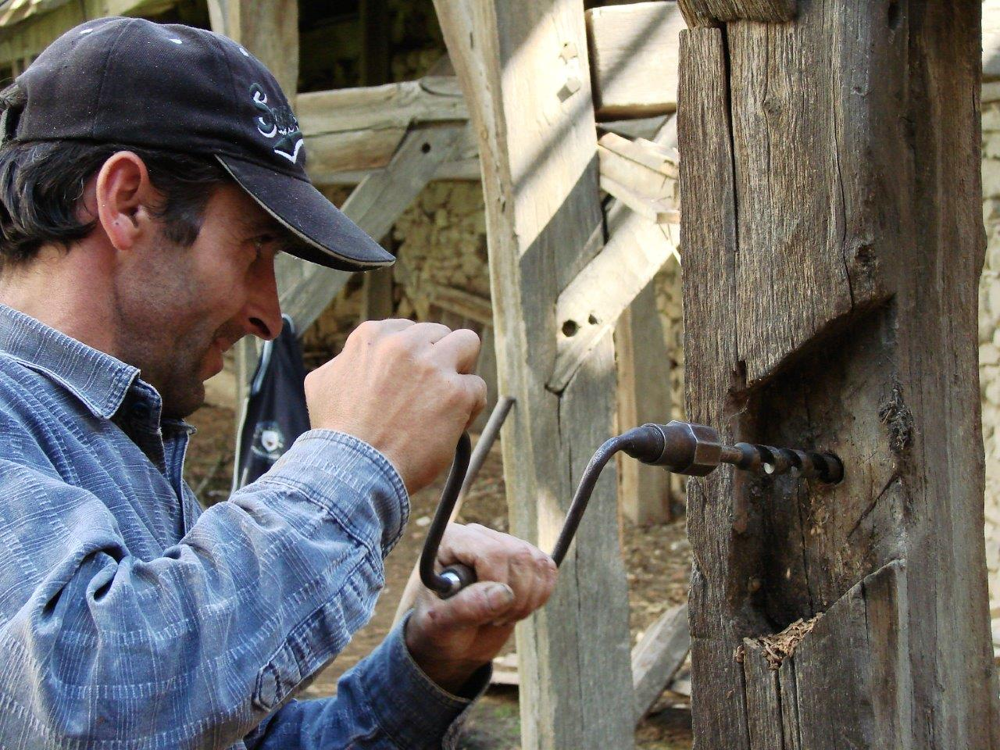
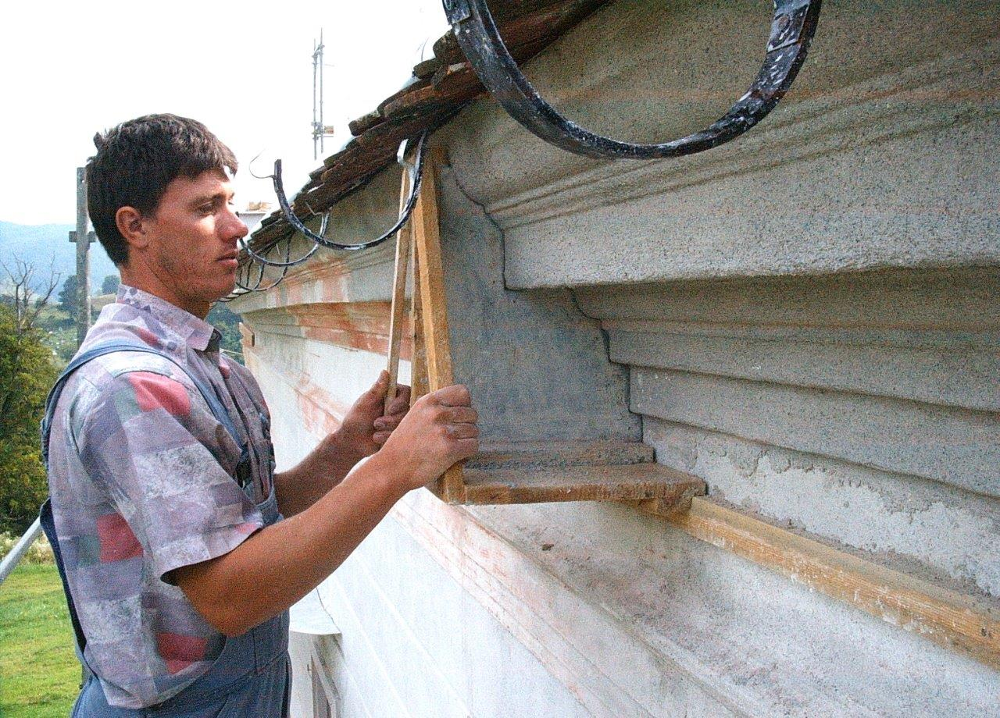
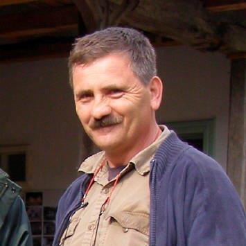
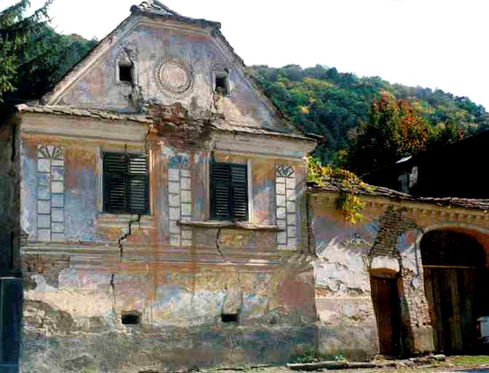

Whole Village Project
Throughout Transylvania, in 1989 thousands of historic houses, mills, barns and bridges were falling into ruin or were being defaced by modern development. Whereas some of the larger towns and cities, such as Sibiu and Sighisoara, received international support, the rural communities were largely neglected. Remote and poor, they were for the most part, little aware of the value of their heritage – not surprisingly, as the exodus of the Saxons after Ceausescu’s death left them occupied by Romanians and gypsies from very different cultures.
In starting our pioneering Whole Village Project, we offered an alternative approach both to haphazard development and to abandonment. Initially, for visual impact and to stimulate the communities’ pride in the settlements, we worked as if washing a beautiful face - repairing (patching) and lime-washing the ancient stuccoed facades, uncovering their Latin and German inscriptions, mending windows, shutters, and roofs. But the restoration of a single house or church can leave it out of context, a jewel spoiled by its setting. To retain the full architectural cohesion and harmony of the mediaeval streetscapes would be a transient achievement unless the villagers themselves came to “own” the concept. For this their living conditions must be transformed. Their incentive to remain in situ was not naturally grounded in appreciation of historic architecture, but if they saw their heritage as a fragile economic asset – once gone, never retrieved - and if with outside assistance it could be converted into a sustainable source of income, then there would be a future for the rural communities as well as for their ancient surroundings.


The Trust started work in 1999 in five villages 50 miles north of Brasov, centred on the village of Viscri. Our methods of procedure were strict. First we met with local representatives, discussed their ideas for development, assessed structures at risk, identified houses most suitable for restoration, appointed a conservation expert and finally created an inventory of historic buildings. The one proviso was an insistence on sympathetic design and use of traditional materials and the principle of minimum intervention, with patch and repair taking precedence over renewal, and as much as possible being kept of the original fabric. Where new additions or treatments cannot be avoided, they are designed to be removable and we try to ensure that repairs mirror the quality and the spirit of the existing work and its craftsmen.

Our Romanian architect, Gabriel Lambescu, exemplified this philosophy, with his love of the vernacular, his insistence on using local labour and materials and his dedication to the highest restoration standards. Together with Caroline Fernolend, he found sites for lime pits, oversaw their preparation, discovered timber and masonry yards and nurtured village blacksmiths and metalworkers. He was adored by his teams of budding or already accomplished restoration builders. His last project was our first wood-fired kiln, which now operates throughout the season producing hand-made tiles and bricks.
After his sudden death in 2006, we found by sheer good luck another inspiring architect, Jan Huelsemann, who moved to Sighisoara and added an extra dimension with his love of wood. He instilled his own demanding standards through village master classes in the repair of wooden structures - whether the 12th century church tower in Bunesti, the meticulous art of furniture, shutters and window making, or the reconstruction of collapsed ancient barns. His greatest gift to Transylvania was his magnificent restoration of two lovely buildings, the Apafi Manor in Malancrav and the Tower House in Sighisoara, which contributed significantly to the MET winning the First prize for Conservation in the 2007 Europa Nostra Prize.
Over the years, under the watchful eyes of architects and overseas experts, notably Colin Richards, the Trust has given on-site training to many local craftsmen and helped a wide variety of small rural entrepreneurs to improve their production and marketing. We extended our activities to conserving and protecting the natural landscape, planting more than two and a half million trees, establishing agricultural associations and assisting farmers. We are active today in 25 villages, several of which, having heard of our work, sought our advice and set up on their own. The Whole village model has been an inspiration to other countries too.
Viscri is the foremost example of a successful Whole Village Project. Under the leadership of Caroline Fernolend, the village has attracted international acclaim for its combination of historic preservation and economic regeneration. It has been estimated that more than half of Viscri’s population has benefited from the Trust’s work. In this village alone we have undertaken 180 restorations, mended cattle troughs, re-cobbled roads, planted trees and provided a school bus. We have built stables for horse trekking and converted buildings into guesthouses. Most ambitious of all, we have installed an ecological sanitation scheme which has become a model for others to follow.


In 2001 we expanded our reach west of Sighisoara to a further 5 villages around Malancrav, which is evolving towards a similar level of self- sufficiency as Viscri. Here, in addition to an extensive programme of restoration, the Trust acquired and presently manages an ancient 266-acre apple orchard, generating income and employment from its organic apple juice production. Close beside the orchard stands the romantic Apafi Manor. The Manor is run by two Malancrav villagers who, seven years previously, had emigrated to Germany but, homesick, came back with their two children.


With Viscri, Malancrav and Alma Vii as examples of what can be achieved, there is no hiding behind bureaucracy or post-communist apathy to put Romania in the “too difficult” pile. The proof is there for all to see.
The entry of Romania into the EU, however, introduced a new threat – that of subsidised uniformity, robbing Transylvania of its uniqueness.
We prefer to look at Romania’s membership of the Union as an opportunity. The award by the European Commission of its premier conservation prize to the MET shows that Europe understands the need for exceptions. The Whole Village Project was evidently seen by the judging panel as a model for the future rather than merely a vehicle for rescuing the past.